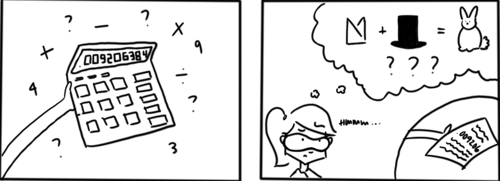

1.3 Computer arithmetic
Contents
1.3 Computer arithmetic#
The way computers store numbers and perform computations could surprise the beginner. In Python if you type \((\sqrt{3})^{2}\) the result will be 2.9….96, where 9 is repeated 15 times. Here are two obvious but fundamental differences in the way computers do arithmetic:
only finitely many numbers can be represented in a computer;
a number represented in a computer can only have finitely many digits.
Therefore the numbers that can be represented in a computer exactly is only a subset of rational numbers. Anytime the computer performs an operation whose outcome is not a number that can be represented exactly in the computer, an approximation will replace the exact number. This is called the roundoff error: error produced when a computer is used to perform real number calculations.
Floating-point representation of real numbers#
Here is a general model for representing real numbers in a computer:
where
In the floating-point representation (1), if we specify \(e\) in such a way that \(a_{1}\neq 0,\) then the representation will be unique. This is called the normalized floating-point representation. For example if \(\beta=10,\) in the normalized floating-point we would write \(0.012\) as \(0.12\times10^{-1}\), instead of choices like \(0.012 \times 10^{0}\) or \(0.0012 \times 10\).
In most computers today, the base is \(\beta=2.\) Bases 8 and 16 were used in old IBM mainframes in the past. Some handheld calculators use base 10. An interesting historical example is a short-lived computer named Setun developed at Moscow State University which used base 3.
There are several choices to make in the general floating-point model (1) for the values of \(s,\beta, t,e\). The IEEE 64-bit floating-point representation is the specific model used in most computers today:
Some comments:
Notice how \(s\) appears in different forms in equations (1) and (2). In (2), \(s\) is either 0 or 1. If \(s=0\), then \(x\) is positive. If \(s=1\), \(x\) is negative.
Since \(\beta=2,\) in the normalized floating-point representation of \(x\) the first (nonzero) digit after the decimal point has to be 1. Then we do not have to store this number. That’s why we write \(x\) as a decimal number starting at 1 in (2). Even though precision is \(t=52,\) we are able to access up to the 53rd digit \(a_{53}\).
The bounds for the exponent are: \(0\leq e\leq 2047.\) We will discuss where 2047 comes from shortly. But first, let’s discuss why we have \(e-1023\) as the exponent in the representation (2), as opposed to simply \(e\) (which we had in the representation (1). If the smallest exponent possible was \(e=0\), then the smallest positive number the computer can generate would be \((1.00...0)_{2}=1\): certainly we need the computer to represent numbers less than 1! That’s why we use the shifted expression \(e-1023\), called the \textbf{biased exponent}, in the representation In (2). Note that the bounds for the biased exponent are \(-1023\leq e-1023 \leq 1024.\)
Here is a schema that illustrates how the physical bits of a computer correspond to the representation above. Each cell in the table below, numbered 1 through 64, correspond to the physical bits in the computer memory.
The first bit is the sign bit: it stores the value for \(s\), 0 or 1.
The blue bits 2 through 12 store the exponent \(e\) (not \(e-1023)\). Using 11 bits, one can generate the integers from 0 to \(2^{11}-1=2047\). Here is how you get the smallest and largest values for \(e\):
The red bits, and there are 52 of them, store the digits \(a_{2}\)
Example 2
Find the floating-point representation of 10.375.
Solution.
You can check that \(10=({\color{cyan}{\color{red}1}}{\color{brown}{\color{green}{\color{green}0}}}{\color{blue}1}{\color{black}0})_{2}\) and \(0.375=(.0{\color{blue}1}{\color{green}1})_{2}\) by computing
Then
where \((1.010011)_{2}\times2^{3}\) is the normalized floating-point representation of the number. Now we rewrite this in terms of the representation (2):
Since \(1026=(10000000010)_{2}\), the bit by bit representation is:
Notice the first sign bit is 0 since the number is positive. The next 11 bits (in blue) represent the exponent \(e=1026\), and the next group of red bits are the mantissa, filled with 0’s after the last digit of the mantissa. In Python, although there is no built-in function that produces the bit by bit representation of a number, we can define the following function named float2bin, which provides the bit representation of a floating-point number, based on the struct package:
import struct
def float2bin(f):
(d,) = struct.unpack(">Q", struct.pack(">d", f))
return f'{d:064b}'
float2bin(10.375)
'0100000000100100110000000000000000000000000000000000000000000000'
Special cases: zero, infinity, NAN#
In the floating-point arithmetic there are two zeros: \(+0.0\) and \(-0.0\), and they have special representations. In the representation of zero, all exponent and mantissa bits are set to 0. The sign bit is 0 for \(+0.0\), and 1, for \(-0.0\):
When the exponent bits are set to zero, we have \(e=0\) and thus \(e-1023=-1023.\) This arrangement, all exponent bits set to zero, is reserved for \(\pm 0.0\) and subnormal numbers. Subnormal numbers are an exception to our normalized floating-point representation, an exception that is useful in various ways. For details see [Goldberg, 1991].
Here is how plus and minus infinity is represented in the computer:
When the exponent bits are set to one, we have \(e=2047\) and thus \(e-1023=1024.\) This arrangement is reserved for \(\pm \infty\) as well as other special values such as NaN (not-a-number).
In conclusion, even though \(-1023\leq e-1023\leq 1024\) in (2), when it comes to representing non-zero real numbers, we only have access to exponents in the following range: \(-1022\leq e-1023\leq 1023.\)
Therefore, the smallest positive real number that can be represented in a computer is
and the largest is
During a calculation, if a number less than the smallest floating-point number is obtained, then we obtain the underflow error. A number greater than the largest gives overflow error.
Excercise 1.3-1
Consider the following toy model for a normalized floating-point representation in base 2: \(x=(-1)^{s}(1.a_{2}a_{3})_{2}\times2^{e}\) where \(-1\leq e\leq1\). Find all positive machine numbers (there are 12 of them) that can be represented in this model. Convert the numbers to base 10, and then carefully plot them on the number line, by hand, and comment on how the numbers are spaced.
Representation of integers#
In the previous section, we discussed representing real numbers in a computer. Here we will give a brief discussion of representing integers. How does a computer represent an integer \(n\)? As in real numbers, we start with writing \(n\) in base 2. We have 64 bits to represent its digits and sign. As in the floating-point representation, we can allocate one bit for the sign, and use the rest, 63 bits, for the digits. This approach has some disadvantages when we start adding integers. Another approach, known as the two’s complement, is more commonly used, including in Python.
For an example, assume we have 8 bits in our computer. To represent 12 in two’s complement (or any positive integer), we simply write it in its base 2 expansion: \((00001100)_2\). To represent \(-12\), we do the following: flip all digits, replacing 1 by 0, and 0 by 1, and then add 1 to the result. When we flip digits for 12, we get \((11110011)_2\), and adding 1 (in binary), gives \((11110100)_2\). Therefore \(-12\) is represented as \((11110100)_2\) in two’s complement approach. It may seem mysterious to go through all this trouble to represent \(-12\), until you add the representations of 12 and \(-12\),
and realize that the first 8 digits of the sum (from right to left), which is what the computer can only represent (ignoring the red digit 1), is \((00000000)_2\). So just like \(12+(-12)=0\) in base 10, the sum of the representations of these numbers is also 0.
We can repeat these calculations with 64-bits, using Python. The function \textit{int2bin} defined below outputs the digits of an integer, using two’s complement for negative numbers:
import struct
def int2bin(i):
(d,) = struct.unpack(">Q", struct.pack(">q", i))
return f'{d:064b}'
int2bin(12)
'0000000000000000000000000000000000000000000000000000000000001100'
- CM27
A.B. Chace and H.P. Manning. The rhind mathematical papyrus: british museum 10057 and 10058. Mathematical Association of America, 1927.
- CGL83
T.F. Chan, G.H. Golub, and R.J. LeVeque. Algorithms for computing the sample variance: analysis and recommendations. The American Statistician, 37:242–247, 1983.
- CK12
E.W. Cheney and D.R. Kincaid. Numerical mathematics and computing. Cengage Learning, 2012.
- Gol91
D Goldberg. What every computer scientist should know about floating-point arithmetic. ACM Computing Surveys (CSUR), 23:5–48, 1991.
- Hig93
N.J Higham. The accuracy of floating point summation. SIAM Journal on Scientific Computing, 14:783–799, 1993.
int2bin(-12)
'1111111111111111111111111111111111111111111111111111111111110100'
You can verify that the sum of these representations is 0, when truncated to 64-digits.
Here is another example illustrating the advantages of two’s complement. Consider \(-3\) and 5, with representations,
The sum of \(-3\) and 5 is 2; what about the binary sum of their representations? We have
and if we ignore the ninth bit in red, the result is \((10)_2\), which is indeed 2. Notice that if we followed the same approach used in the floating-point representation and allocated the leftmost bit to the sign of the integer, we would not have had this property.
We will not discuss integer representations and integer arithmetic any further. However one useful fact to keep in mind is the following: in two’s complement, using 64 bits, one can represent integers between \(-2^{63}=-9223372036854775808\) and \(2^{63}-1=9223372036854775807\). Any integer below or above yields underflow or overflow error. However, Python is special compared to the other programming languages in that it supports arbitrary-precision integer implementation. Integers of any size can be supported in Python, while it is not true for floats.
Example 3
From Calculus, we know that \(\lim_{n->\infty} \frac{n^n}{n!}=\infty\). Therefore, computing \(\frac{n^n}{n!}\), which is a float, for large \(n\) will cause overflow at some point. Here is a Python code for this calculation:
from scipy.special import factorial
f = lambda n: n**n/factorial(n)
Let’s have a closer look at this function. The Python function \textbf{factorial(n)} computes the factorial, returned as a float, as the gamma function at \(n+1\). If we call \(f\) with an integer input, then the above code will compute \(n^n\) as an integer and \(\text{factorial}(n)\) as a float. Then it will divide these numbers, by first converting \(n^n\) to a float, and obtain a floating-point factorial. Let’s compute \(f(n)=\frac{n^n}{n!}\) as \(n=1,...,1000\):
Notice that the process cannot proceed beyond \(n=143\). Where exactly does the error occur? Python can compute \(144^{144}\) exactly (arbitrary-precision); however, when it is converted to a floating-point number, overflow occurs. For \(143^{143}\), overflow does not happen.
float(143**143)
1.6332525972973913e+308
float(144**144)
---------------------------------------------------------------------------
OverflowError Traceback (most recent call last)
~\AppData\Local\Temp/ipykernel_30924/889305548.py in <module>
----> 1 float(144**144)
OverflowError: int too large to convert to float
The function \(f(n)\) can be coded in a much better way if we rewrite \(\frac{n^n}{n!}\) as \(\frac{n}{n}\frac{n}{n-1}...\frac{n}{1}\). Each fraction can be computed separately, and then multiplied, which will slow down the growth of the numbers. Here is a new code using a \textbf{for} statement.
def f(n):
pr = 1.
for i in range(1, n):
pr *= n/(n-i)
return pr
Let’s compute \(f(n)=\frac{n^n}{n!}\) as \(n=1,...,1000\) again:
for i in range(1, 1001):
print(i, f(i))
1 1.0
2 2.0
3 4.5
4 10.666666666666666
5 26.04166666666667
6 64.8
7 163.4013888888889
8 416.1015873015873
9 1067.6270089285717
10 2755.7319223985896
11 7147.658895778218
12 18613.92623376623
13 48638.846138470086
14 127463.00337621223
15 334864.62769059895
16 881657.9515664612
17 2325750.6353670293
18 6145596.911985093
19 16263866.35393554
20 43099804.12182178
21 114356611.36860378
22 303761260.04766595
23 807692034.6582019
24 2149632061.46467
25 5726042115.469877
26 15264691107.046677
27 40722913454.16043
28 108713644516.20929
29 290404350962.99005
30 776207020879.7278
31 2075825009901.0051
32 5554277310717.432
33 14868745536619.773
34 39821588060720.57
35 106696188125885.61
36 285992654335445.25
37 766879127067901.2
38 2057103777254333.8
39 5519943051629865.0
40 1.481680567132267e+16
41 3.9784069108519896e+16
42 1.0685429454599886e+17
43 2.8707602164766144e+17
44 7.714688909178948e+17
45 2.0737254554929075e+18
46 5.575586585767318e+18
47 1.4994492532091275e+19
48 4.033393610026708e+19
49 1.0851831788708546e+20
50 2.920285716919191e+20
51 7.860206077134318e+20
52 2.1160478142780536e+21
53 5.697663900168536e+21
54 1.5344226789979213e+22
55 4.133017184882952e+22
56 1.1134245021677864e+23
57 3.0000132961520014e+23
58 8.08447903762823e+23
59 2.1789390785575456e+24
60 5.873543285009077e+24
61 1.583489730844801e+25
62 4.26961165182664e+25
63 1.151377377837744e+26
64 3.105284801012615e+26
65 8.376024284288511e+26
66 2.259568731583724e+27
67 6.09625028261691e+27
68 1.6449327945594896e+28
69 4.4389501227800975e+28
70 1.198002613029647e+29
71 3.233548465300581e+29
72 8.72858533644468e+29
73 2.3564056090942187e+30
74 6.362045919639798e+30
75 1.717841262626492e+31
76 4.638821880509547e+31
77 1.252765534450985e+32
78 3.38351702153722e+32
79 9.139079946268593e+32
80 2.468716597411465e+33
81 6.669200710894893e+33
82 1.8018112811152087e+34
83 4.868296055291834e+34
84 1.3154551846753903e+35
85 3.5547231931281884e+35
86 9.606505987793982e+35
87 2.596297027045303e+36
88 7.017329595384586e+36
89 1.89678152475084e+37
90 5.127315709529861e+37
91 1.386083899566571e+38
92 3.747271034625568e+38
93 1.0131325235435703e+39
94 2.7393178441482474e+39
95 7.407012632304307e+39
96 2.0029389939554902e+40
97 5.416463730655616e+40
98 1.4648290958181994e+41
99 3.961691105665826e+41
100 1.0715102881254684e+42
101 2.898235845689207e+42
102 7.839571392600306e+42
103 2.120663295511333e+43
104 5.736823952982956e+43
105 1.551998649486448e+44
106 4.198854150727548e+44
107 1.1360292303392675e+45
108 3.073740014077657e+45
109 8.316935162693653e+45
110 2.2504932907103145e+46
111 6.089898041900195e+46
112 1.6480101901073116e+47
113 4.459919540030163e+47
114 1.207010675348237e+48
115 3.2667196068143096e+48
116 8.841561651906262e+48
117 2.393107411698791e+49
118 6.477556687451058e+49
119 1.753379015261188e+50
120 4.746305390490175e+50
121 1.2848445620360104e+51
122 3.478245997972867e+51
123 9.416392383935275e+51
124 2.5493127339557556e+52
125 6.902012924238453e+52
126 1.8687116017035965e+53
127 5.059672856069882e+53
128 1.3699856602506262e+54
129 3.7095636286736794e+54
130 1.0044831217748814e+55
131 2.7200399275386404e+55
132 7.365810408105398e+55
133 1.9947029256050195e+56
134 5.401920128725678e+56
135 1.4629522660965063e+57
136 3.9620872877699045e+57
137 1.0730739055834447e+58
138 2.9063423520110893e+58
139 7.871822311096422e+58
140 2.1321365066408954e+59
141 5.7751834341927865e+59
142 1.5643266954396465e+60
143 4.2374040203696526e+60
144 1.1478440475610802e+61
145 3.1093982266543913e+61
146 8.42325815718114e+61
147 2.2818865047813226e+62
148 6.181843340005503e+62
149 1.6747571537347996e+63
150 4.537278606250998e+63
151 1.2292739630930912e+64
152 3.330515210625084e+64
153 9.023676930255959e+64
154 2.4449214514023576e+65
155 6.624535326790721e+65
156 1.7949607192256203e+66
157 4.863661949182378e+66
158 1.3178943772667414e+67
159 3.571136979574354e+67
160 9.677005419347709e+67
161 2.6223093557471638e+68
162 7.1061639753031565e+68
163 1.925727277727397e+69
164 5.218701973241486e+69
165 1.414289338100381e+70
166 3.8328515477589505e+70
167 1.0387561176557246e+71
168 2.815224031581615e+71
169 7.629920384331333e+71
170 2.0679243137011046e+72
171 5.60475679070332e+72
172 1.519099832919742e+73
173 4.117401193041999e+73
174 1.1160079738415468e+74
175 3.0249525587933326e+74
176 8.199302612340216e+74
177 2.222502507552923e+75
178 6.024410021229209e+75
179 1.6330279792047593e+76
180 4.426693917026818e+76
181 1.1999745952355402e+77
182 3.252903843479908e+77
183 8.818139060466311e+77
184 2.3905021210113364e+78
185 6.48048822382477e+78
186 1.7568417821794137e+79
187 4.762816426305189e+79
188 1.2912229387976535e+80
189 3.5006182755290005e+80
190 9.490614805681046e+80
191 2.573060175914815e+81
192 6.976080463543653e+81
193 1.891380467024954e+82
194 5.1280486611017305e+82
195 1.3903723916935297e+83
196 3.7697785096390913e+83
197 1.022130096272233e+84
198 2.77141844983302e+84
199 7.514560081859098e+84
200 2.0375604057921747e+85
201 5.524879929308393e+85
202 1.4980991627847728e+86
203 4.0622214172427066e+86
204 1.1015187209514397e+87
205 2.986932326600318e+87
206 8.099608777938188e+87
207 2.1963816691146752e+88
208 5.956026730170594e+88
209 1.6151411311478586e+89
210 4.3799512748790566e+89
211 1.1877717658324937e+90
212 3.2210805523442983e+90
213 8.735243140983809e+90
214 2.3689352415063163e+91
215 6.4244523747940336e+91
216 1.74230318120021e+92
217 4.7251542705622864e+92
218 1.2814830297252362e+93
219 3.4754759588091777e+93
220 9.42584380355192e+93
221 2.556410946919441e+94
222 6.933388531610192e+94
223 1.880463059586577e+95
224 5.1002144245256194e+95
225 1.3833000266141324e+96
226 3.7518772263034314e+96
227 1.01761874138367e+97
228 2.7601061387376622e+97
229 7.486358844964272e+97
230 2.030577794332652e+98
231 5.507731035042956e+98
232 1.493928726935934e+99
233 4.052201768868784e+99
234 1.0991481652438422e+100
235 2.9814352157577752e+100
236 8.087204794796654e+100
237 2.193690722090323e+101
238 5.95053777431425e+101
239 1.6141387466263185e+102
240 4.378539834593071e+102
241 1.1877403546904882e+103
242 3.2219400331915657e+103
243 8.740113985519147e+103
244 2.3709391747224618e+104
245 6.431723574016972e+104
246 1.7447690219584072e+105
247 4.733169924615158e+105
248 1.2840141366006204e+106
249 3.4833012854553513e+106
250 9.449651073074732e+106
251 2.5635628821150116e+107
252 6.95465545536e+107
253 1.8867340123126726e+108
254 5.11857564549587e+108
255 1.388644040577844e+109
256 3.767350945647505e+109
257 1.022079156116496e+110
258 2.772913154054641e+110
259 7.523003474577936e+110
260 2.0410304773749747e+111
261 5.537464121423557e+111
262 1.5023653011302969e+112
263 4.076085855260692e+112
264 1.1058958721045081e+113
265 3.000462910352867e+113
266 8.14076797198489e+113
267 2.2087448799146888e+114
268 5.992786105336744e+114
269 1.6259793212374632e+115
270 4.4116825669408705e+115
271 1.1970063914403172e+116
272 3.247817635206273e+116
273 8.812309331168172e+116
274 2.391061470300828e+117
275 6.487757941622224e+117
276 1.7603596388028485e+118
277 4.776513553091653e+118
278 1.2960550625927264e+119
279 3.516727339130854e+119
280 9.542380474837798e+119
281 2.589271114322551e+120
282 7.025885547720942e+120
283 1.9064584414713852e+121
284 5.173164903927287e+121
285 1.4037442541486945e+122
286 3.809099619766039e+122
287 1.0336162345444411e+123
288 2.80478093174234e+123
289 7.610990597885944e+123
290 2.065313679609402e+124
291 5.604455650301734e+124
292 1.5208396039682285e+125
293 4.127013921484561e+125
294 1.1199302642136033e+126
295 3.039124819379012e+126
296 8.247239109627078e+126
297 2.2380568319397974e+127
298 6.073458859388726e+127
299 1.6481757499125833e+128
300 4.472737103142234e+128
301 1.2137958111145053e+129
302 3.2939749394472764e+129
303 8.939172652196277e+129
304 2.425921383435442e+130
305 6.583524665165869e+130
306 1.7866625861512363e+131
307 4.848740433538116e+131
308 1.3158840714493804e+132
309 3.571154261430674e+132
310 9.691742416971457e+132
311 2.630252080642776e+133
312 7.138305410780968e+133
313 1.937292093161324e+134
314 5.257718145312713e+134
315 1.4269268032216341e+135
316 3.8726502539967454e+135
317 1.0510346411957682e+136
318 2.852515035681157e+136
319 7.741783096376396e+136
320 2.1011457940143395e+137
321 5.702607690185135e+137
322 1.5477218286355315e+138
323 4.200629832443856e+138
324 1.1400870067019067e+139
325 3.094308756790338e+139
326 8.398299343948518e+139
327 2.2794028944347603e+140
328 6.186611851712586e+140
329 1.679139041107944e+141
330 4.5574556769726e+141
331 1.2369730563085204e+142
332 3.357376190532597e+142
333 9.112588110471681e+142
334 2.473349169454258e+143
335 6.713222886259903e+143
336 1.822126963266615e+144
337 4.945704047777442e+144
338 1.3423925227653705e+145
339 3.643617868655294e+145
340 9.88981140197507e+145
341 2.6843866653146904e+146
342 7.286248878703198e+146
343 1.9777199066119444e+147
344 5.368184234643274e+147
345 1.4571084370663876e+148
346 3.9551062612467614e+148
347 1.0735598264699504e+149
348 2.914044291640695e+149
349 7.909842516692477e+149
350 2.147045788219223e+150
351 5.827959791500507e+150
352 1.581952896950821e+151
353 4.294101447242591e+151
354 1.1656087355063412e+152
355 3.163989385858752e+152
356 8.588532506194127e+152
357 2.3313346649924287e+153
358 6.328371720339829e+153
359 1.7178333649842233e+154
360 4.663068223635443e+154
361 1.2657973418142355e+155
362 3.436040339439065e+155
363 9.327257871683235e+155
364 2.5319280515901315e+156
365 6.87306378413002e+156
366 1.865739545026157e+157
367 5.06469478599074e+157
368 1.3748558034925262e+158
369 3.7321803838405254e+158
370 1.013140540691518e+159
371 2.750289094273547e+159
372 7.466010145032731e+159
373 2.0267508904156617e+160
374 5.5019131251632526e+160
375 1.4935805032013574e+161
376 4.0545726431127e+161
377 1.1006850566857062e+162
378 2.988013679624788e+162
379 8.111545542407982e+162
380 2.202044802149995e+163
381 5.977921298542024e+163
382 1.62284009839198e+164
383 4.405576570024306e+164
384 1.1960002118303385e+165
385 3.2468425644024405e+165
386 8.814398244989346e+165
387 2.3929055807349844e+166
388 6.496207748831716e+166
389 1.763582127801201e+167
390 4.787765893424384e+167
391 1.2997850896138407e+168
392 3.5286746208013684e+168
393 9.579726033342001e+168
394 2.6007342012902264e+169
395 7.060577859420968e+169
396 1.916840225573428e+170
397 5.203948216385326e+170
398 1.4128023044387343e+171
399 3.8355813001259446e+171
400 1.0413155492469523e+172
401 2.8270589879464204e+172
402 7.675182952923639e+172
403 2.0837419991380294e+173
404 5.657186417620521e+173
405 1.5358838156367175e+174
406 4.169822427440538e+174
407 1.1320824920397024e+175
408 3.073547270625108e+175
409 8.344551958642584e+175
410 2.265517632176083e+176
411 6.150822022817379e+176
412 1.6699372766682611e+177
413 4.533863450205881e+177
414 1.2309431186933009e+178
415 3.342018115001358e+178
416 9.073625995653543e+178
417 2.4635092797024084e+179
418 6.688500727988631e+179
419 1.8159529689831857e+180
420 4.93039427532366e+180
421 1.338628090782746e+181
422 3.6344562248758005e+181
423 9.867796141100456e+181
424 2.679181328508912e+182
425 7.274200273847912e+182
426 1.9750113746102863e+183
427 5.36234984148984e+183
428 1.455934633344334e+184
429 3.9530271253944466e+184
430 1.0732944678322144e+185
431 2.914131603015729e+185
432 7.912260888689149e+185
433 2.1482914465643521e+186
434 5.832932587395485e+186
435 1.5837326388118763e+187
436 4.300093745622006e+187
437 1.1675490146784249e+188
438 3.170103604008571e+188
439 8.607418537445635e+188
440 2.3370796416454245e+189
441 6.345636991222307e+189
442 1.7229713336897375e+190
443 4.678234529980735e+190
444 1.2702436545694102e+191
445 3.4489998758660024e+191
446 9.364841236678371e+191
447 2.54277978620358e+192
448 6.904276373176743e+192
449 1.874686560059002e+193
450 5.090263220097804e+193
451 1.3821427075865184e+194
452 3.7528966067615044e+194
453 1.0190168719376486e+195
454 2.7669238519986037e+195
455 7.513012170621022e+195
456 2.040008728852957e+196
457 5.539250461754733e+196
458 1.5040802840128846e+197
459 4.084059576034625e+197
460 1.1089555759830438e+198
461 3.01118372645213e+198
462 8.176385914834665e+198
463 2.220171507129669e+199
464 6.0285474060107235e+199
465 1.636966696165735e+200
466 4.444961573538404e+200
467 1.2069719497678254e+201
468 3.2773840694244355e+201
469 8.899354159728796e+201
470 2.4165213073537476e+202
471 6.56181148928758e+202
472 1.781795462226168e+203
473 4.838301427374088e+203
474 1.313799113175057e+204
475 3.5675163572150127e+204
476 9.68732663611055e+204
477 2.630527653023461e+205
478 7.143034594385643e+205
479 1.9396509569418503e+206
480 5.267024789107969e+206
481 1.4302372388804286e+207
482 3.883754223849172e+207
483 1.0546207930536975e+208
484 2.863794501892171e+208
485 7.776573813186128e+208
486 2.111716769181049e+209
487 5.734346839433423e+209
488 1.557159720991589e+210
489 4.22847021995204e+210
490 1.1482443015616957e+211
491 3.118072615591561e+211
492 8.467185052328591e+211
493 2.2992848318971177e+212
494 6.243777092400747e+212
495 1.695519913849635e+213
496 4.604254120702593e+213
497 1.2503066989029923e+214
498 3.3952730727271374e+214
499 9.22005974560589e+214
500 2.503765396162106e+215
501 6.799146492914913e+215
502 1.8463584938928076e+216
503 5.0139329265984147e+216
504 1.361575941177785e+217
505 3.6974820315500376e+217
506 1.0040864961364084e+218
507 2.7266979275981127e+218
508 7.404637020319575e+218
509 2.0108115024060755e+219
510 5.4605927141394574e+219
511 1.48289036725399e+220
512 4.02697685818708e+220
513 1.0935787220032823e+221
514 2.9697630108267824e+221
515 8.06481403070259e+221
516 2.190119132364025e+222
517 5.947602508167341e+222
518 1.6151651844743637e+223
519 4.386243747209062e+223
520 1.1911580366252355e+224
521 3.234795355529715e+224
522 8.784661592217142e+224
523 2.385635328459897e+225
524 6.478640363588688e+225
525 1.7593995546417597e+226
526 4.777996973124826e+226
527 1.2975617872145872e+227
528 3.523798006430018e+227
529 9.569621091399943e+227
530 2.5988382758496614e+228
531 7.057721861697713e+228
532 1.9166843360406655e+229
533 5.20519992429816e+229
534 1.4135949983362208e+230
535 3.8389578690351613e+230
536 1.0425633414363326e+231
537 2.831341860176156e+231
538 7.689231245431635e+231
539 2.0882105424476294e+232
540 5.671088084899902e+232
541 1.5401366157866813e+233
542 4.182662673403384e+233
543 1.135918503505381e+234
544 3.0849081891317785e+234
545 8.37795543879788e+234
546 2.275278585763602e+235
547 6.179194145940564e+235
548 1.6781463289395086e+236
549 4.55751950958946e+236
550 1.2377358373730007e+237
551 3.361461274231412e+237
552 9.129121218569328e+237
553 2.4793083751117996e+238
554 6.733375443306097e+238
555 1.828672025333469e+239
556 4.966375080885549e+239
557 1.3487886822666443e+240
558 3.663101980664647e+240
559 9.948435831338117e+240
560 2.701850352036093e+241
561 7.337843939169923e+241
562 1.9928579362943738e+242
563 5.412337834595677e+242
564 1.4699214873107073e+243
565 3.9921243631555144e+243
566 1.0842131376347e+244
567 2.944597548860552e+244
568 7.997198983333606e+244
569 2.171953537863564e+245
570 5.898802144979726e+245
571 1.6020563817968196e+246
572 4.351033516755785e+246
573 1.1817013304402632e+247
574 3.209398765390907e+247
575 8.716463113110585e+247
576 2.367323277301167e+248
577 6.429474739291854e+248
578 1.7462003549053932e+249
579 4.742565083524065e+249
580 1.2880513415853102e+250
581 3.4982729680180664e+250
582 9.501121174494739e+250
583 2.580457201987758e+251
584 7.008403575651341e+251
585 1.903453101594436e+252
586 5.169706569194948e+252
587 1.4040747776344393e+253
588 3.813425024992977e+253
589 1.0357163073737352e+254
590 2.81298257471672e+254
591 7.640009400961531e+254
592 2.0750155966646377e+255
593 5.6357206383222084e+255
594 1.5306580008148933e+256
595 4.157262902260366e+256
596 1.1291130497306451e+257
597 3.066676567208827e+257
598 8.329120238393795e+257
599 2.2621994647969805e+258
600 6.144170572108391e+258
601 1.668769045758853e+259
602 4.532416455848686e+259
603 1.2310167969751927e+260
604 3.34348013225258e+260
605 9.081009077245452e+260
606 2.4664372206888455e+261
607 6.698948090327484e+261
608 1.8194651785803532e+262
609 4.941757969512668e+262
610 1.3422078653499607e+263
611 3.6455131642490207e+263
612 9.901435063454301e+263
613 2.689293460335385e+264
614 7.304303757557916e+264
615 1.9839011581224025e+265
616 5.3884246002078806e+265
617 1.4635385332328253e+266
618 3.975091068191243e+266
619 1.0796688516907432e+267
620 2.932477092072705e+267
621 7.964880214507439e+267
622 2.1633382647979042e+268
623 5.8758429091643026e+268
624 1.595939706154317e+269
625 4.334742868320149e+269
626 1.1773640132147178e+270
627 3.1978547042762784e+270
628 8.685748497704022e+270
629 2.359154168560159e+271
630 6.407755672929845e+271
631 1.7404282012984583e+272
632 4.727230999959205e+272
633 1.2839794752391987e+273
634 3.4874651756617213e+273
635 9.472447735425941e+273
636 2.572853714221954e+274
637 6.988251186918478e+274
638 1.89811470923551e+275
639 5.155572941440133e+275
640 1.4003350143224607e+276
641 3.8035356440339875e+276
642 1.0331028534643966e+277
643 2.8060807096521453e+277
644 7.621795293857324e+277
645 2.070212496032325e+278
646 5.6230648576954567e+278
647 1.5273261232149635e+279
648 4.1484989601595517e+279
649 1.126810040317026e+280
650 3.0606308103730256e+280
651 8.313266391251163e+280
652 2.2580469147880274e+281
653 6.133307443132825e+281
654 1.6659310323798032e+282
655 4.5250127652769933e+282
656 1.2290883583383514e+283
657 3.3384656028243823e+283
658 9.067993695737831e+283
659 2.4630658020984015e+284
660 6.690234168945828e+284
661 1.8172183848222402e+285
662 4.935980343712929e+285
663 1.3407265709092491e+286
664 3.6417279981227682e+286
665 9.891799068193076e+286
666 2.6868508420121552e+287
667 7.298142159201527e+287
668 1.9823556251851794e+288
669 5.384573416233746e+288
670 1.4625863735585208e+289
671 3.972759058602277e+289
672 1.0791042731857537e+290
673 2.9311299877642585e+290
674 7.961725941023884e+290
675 2.1626181697687338e+291
676 5.874257055255918e+291
677 1.5956091635009784e+292
678 4.33411639086148e+292
679 1.1772673246841865e+293
680 3.197791040016488e+293
681 8.686114337143732e+293
682 2.3593994303677596e+294
683 6.408816919981759e+294
684 1.7408234395268693e+295
685 4.728594251551542e+295
686 1.2844282138358084e+296
687 3.4888964895726814e+296
688 9.476910794182668e+296
689 2.574221771641162e+297
690 6.992389028057614e+297
691 1.8993528910968646e+298
692 5.159245525823278e+298
693 1.4014163613207126e+299
694 3.806699742638746e+299
695 1.0340237467491179e+300
696 2.808748489186362e+300
697 7.629492300623618e+300
698 2.0724252410041355e+301
699 5.629405753317709e+301
700 1.529137983971613e+302
701 4.153662857747968e+302
702 1.1282783413388609e+303
703 3.064796903651346e+303
704 8.325064139791636e+303
705 2.261381911989747e+304
706 6.142719392952918e+304
707 1.6685832310803885e+305
708 4.532475935558631e+305
709 1.2311857272492938e+306
710 3.34435267514059e+306
711 9.084499321839277e+306
712 2.4676885942863887e+307
713 6.70316853566547e+307
714 inf
715 inf
716 inf
717 inf
718 inf
719 inf
720 inf
721 inf
722 inf
723 inf
724 inf
725 inf
726 inf
727 inf
728 inf
729 inf
730 inf
731 inf
732 inf
733 inf
734 inf
735 inf
736 inf
737 inf
738 inf
739 inf
740 inf
741 inf
742 inf
743 inf
744 inf
745 inf
746 inf
747 inf
748 inf
749 inf
750 inf
751 inf
752 inf
753 inf
754 inf
755 inf
756 inf
757 inf
758 inf
759 inf
760 inf
761 inf
762 inf
763 inf
764 inf
765 inf
766 inf
767 inf
768 inf
769 inf
770 inf
771 inf
772 inf
773 inf
774 inf
775 inf
776 inf
777 inf
778 inf
779 inf
780 inf
781 inf
782 inf
783 inf
784 inf
785 inf
786 inf
787 inf
788 inf
789 inf
790 inf
791 inf
792 inf
793 inf
794 inf
795 inf
796 inf
797 inf
798 inf
799 inf
800 inf
801 inf
802 inf
803 inf
804 inf
805 inf
806 inf
807 inf
808 inf
809 inf
810 inf
811 inf
812 inf
813 inf
814 inf
815 inf
816 inf
817 inf
818 inf
819 inf
820 inf
821 inf
822 inf
823 inf
824 inf
825 inf
826 inf
827 inf
828 inf
829 inf
830 inf
831 inf
832 inf
833 inf
834 inf
835 inf
836 inf
837 inf
838 inf
839 inf
840 inf
841 inf
842 inf
843 inf
844 inf
845 inf
846 inf
847 inf
848 inf
849 inf
850 inf
851 inf
852 inf
853 inf
854 inf
855 inf
856 inf
857 inf
858 inf
859 inf
860 inf
861 inf
862 inf
863 inf
864 inf
865 inf
866 inf
867 inf
868 inf
869 inf
870 inf
871 inf
872 inf
873 inf
874 inf
875 inf
876 inf
877 inf
878 inf
879 inf
880 inf
881 inf
882 inf
883 inf
884 inf
885 inf
886 inf
887 inf
888 inf
889 inf
890 inf
891 inf
892 inf
893 inf
894 inf
895 inf
896 inf
897 inf
898 inf
899 inf
900 inf
901 inf
902 inf
903 inf
904 inf
905 inf
906 inf
907 inf
908 inf
909 inf
910 inf
911 inf
912 inf
913 inf
914 inf
915 inf
916 inf
917 inf
918 inf
919 inf
920 inf
921 inf
922 inf
923 inf
924 inf
925 inf
926 inf
927 inf
928 inf
929 inf
930 inf
931 inf
932 inf
933 inf
934 inf
935 inf
936 inf
937 inf
938 inf
939 inf
940 inf
941 inf
942 inf
943 inf
944 inf
945 inf
946 inf
947 inf
948 inf
949 inf
950 inf
951 inf
952 inf
953 inf
954 inf
955 inf
956 inf
957 inf
958 inf
959 inf
960 inf
961 inf
962 inf
963 inf
964 inf
965 inf
966 inf
967 inf
968 inf
969 inf
970 inf
971 inf
972 inf
973 inf
974 inf
975 inf
976 inf
977 inf
978 inf
979 inf
980 inf
981 inf
982 inf
983 inf
984 inf
985 inf
986 inf
987 inf
988 inf
989 inf
990 inf
991 inf
992 inf
993 inf
994 inf
995 inf
996 inf
997 inf
998 inf
999 inf
1000 inf
The previous version of the code gave overflow error when \(n=144\). This version has no difficulty in computing \(n^n/n!\) for \(n=144\). In fact, we can go as high as \(n=713\). Overflow in floating-point arithmetic yields the output inf, which stands for infinity.
Another way to accommodate a larger value of \(n\) is to define the function \(f\) in this way:
from scipy.special import factorial
f = lambda n: n**n/factorial(n, True)
With the addition input “True’’, the function factorial(n) returns an integer with arbitrary precision, instead of a float, so that both the numerator and denominator are integers. The limit process stops only when the division produces a floating-point number that is so large that overflow occurs. As a result, the same result as in the improved algorithm above is expected. Please verify that the process can continue until \(n=713\) with the modified \(f\) function.
We will discuss several features of computer arithmetic in the rest of this section. The discussion is easier to follow if we use the familiar base 10 representation of numbers instead of base 2. To this end, we introduce the normalized decimal floating-point representation:
where \(1\leq d_{1}\leq9,0\leq d_{i}\leq9\) for all \(i=2,3,...,k.\) Informally, we call these numbers \(k-\)digit decimal machine numbers.
Chopping & Rounding#
Let \(x\) be a real number with more digits the computer can handle: \(x=0.d_{1}d_{2}\ldots d_{k}d_{k+1}\ldots\times10^{n}\). How will the computer represent \(x\)? Let’s use the notation \(fl(x)\) for the floating-point representation of \(x\). There are two choices, chopping and rounding:
In chopping, we simply take the first \(k\) digits and ignore the rest: \(fl(x)=0.d_{1}d_{2}\ldots d_{k}.\)
In rounding, if \(d_{k+1}\geq 5\) we add 1 to \(d_{k}\) to obtain \(fl(x)\). If \(d_{k+1}<5,\) then we simply do as in chopping.
Example 4
Find 5-digit (\(k=5\)) chopping and rounding values of the numbers below:
\(\pi=0.314159265...\times10^{1}\)
Chopping gives \(fl(\pi)=0.31415\) and rounding gives \(fl(\pi)=0.31416.\)
\(0.0001234567\)
We need to write the number in the normalized representation first as \(0.1234567\times10^{-3}.\) Now chopping gives \(0.12345\) and rounding gives \(0.12346.\)
Absolute and relative error#
Since computers only give approximations to real numbers, we need to be clear on how we measure the error of an approximation.
Definition 3
Suppose \(x^{*}\) is an approximation to \(x\).
\(|x^{*}-x|\) is called the absolute error
\(\frac{|x^{*}-x|}{|x|}\) is called the relative error \((x\neq0)\)
Relative error usually is a better choice of measure, and we need to understand why.
Example 5
Find absolute and relative errors of
\(x=0.20\times10^{1},x^{*}=0.21\times10^{1}\)
\(x=0.20\times10^{-2},x^{*}=0.21\times10^{-2}\)
\(x=0.20\times10^{5},x^{*}=0.21\times10^{5}\)
Notice how the only difference in the three cases is the exponent of the numbers. The absolute errors are: \(0.01\times 10\) , \(0.01\times 10^{-2}\) , \(0.01\times 10^{5}\). The absolute errors are different since the exponents are different. However, the relative error in each case is the same: \(0.05\).
Definition 4
The number \(x^{*}\) is said to approximate \(x\) to \(s\) significant digits (or figures) if \(s\) is the largest nonnegative integer such that
In Example Example 5 we had \(\frac{|x-x^{*}|}{|x|}=0.05\leq5\times10^{-2}\) but not less than or equal to \(5\times10^{-3}\). Therefore we say \(x^{*}=0.21\) approximates \(x=0.20\) to 2 significant digits (but not to 3 digits).
When the computer approximates a real number \(x\) by \(fl(x)\), what can we say about the error? The following result gives an upper bound for the relative error.
Lemma 1
The relative error of approximating \(x\) by \(fl(x)\) in the \(k\)-digit normalized decimal floating-point representation satisfies
Proof. We will give the proof for chopping; the proof for rounding is similar but tedious. Let
Then
if chopping is used. Observe that
We have two simple bounds: \(0.d_{k+1}d_{k+2}...<1\) and \(0.d_{1}d_{2}...\geq 0.1\), the latter true since the smallest \(d_{1}\) can be, is 1. Using these bounds in the equation above we get
Remark 1
Lemma Lemma 1 easily transfers to the base 2 floating-point representation: \(x=(-1)^{s}(1.a_{2}...a_{53})_{2}\times2^{e-1023}\), by
Machine epsilon#
Machine epsilon \(\epsilon\) is the smallest positive floating point number for which \(fl(1+\epsilon)>1.\) This means, if we add to \(1.0\) any number less than \(\epsilon\), the machine computes the sum as \(1.0\).
The number 1.0 in its binary floating-point representation is simply \((1.0\ldots0)_{2}\) where \(a_{2}=a_{3}=...=a_{53}=0.\) We want to find the smallest number that gives a sum larger than 1.0, when it is added to 1.0. The answer depends on whether we chop or round.
If we are chopping, examine the binary addition
and notice \((0.0...01)_{2}=\left(\frac{1}{2}\right)^{52}=2^{-52}\) is the smallest number we can add to 1.0 such that the sum will be different than 1.0.
If we are rounding, examine the binary addition
where the sum has to be rounded to 53 digits to obtain
Observe that the number added to \(1.0\) above is \((0.0...01)_{2}=\left(\frac{1}{2}\right)^{53}=2^{-53}\), which is the smallest number that will make the sum larger than 1.0 with rounding.
In summary, we have shown
As a consequence, notice that we can restate the inequality in Remark Remark 1 in a compact way using the machine epsilon as:
Remark 2
There is another definition of machine epsilon: it is the distance between 1.0 and the next floating-point number.
Note that the distance (absolute value of the difference) is \(\left(\frac{1}{2}\right)^{52}=2^{-52}.\) In this alternative definition, machine epsilon is not based on whether rounding or chopping is used. Also, note that the distance between two adjacent floating-point numbers is not constant, but it is smaller for smaller values, and larger for larger values (see Exercise 1.3-1).
Propagation of error#
We discussed the resulting error when chopping or rounding is used to approximate a real number by its machine version. Now imagine carrying out a long calculation with many arithmetical operations, and at each step there is some error due to say, rounding. Would all the rounding errors accumulate and cause havoc? This is a rather difficult question to answer in general. For a much simpler example, consider adding two real numbers \(x,y\). In the computer, the numbers are represented as \(fl(x),fl(y)\). The sum of these number is \(fl(x)+fl(y)\); however, the computer can only represent its floating-point version, \(fl(fl(x)+fl(y))\). Therefore the relative error in adding two numbers is:
In this section, we will look at some specific examples where roundoff error can cause problems, and how we can avoid them.
Subtraction of nearly equal quantities: Cancellation of leading digits#
The best way to explain this phenomenon is by an example. Let \(x=1.123456,y=1.123447\). We will compute \(x-y\) and the resulting roundoff error using rounding and 6-digit arithmetic. First, we find \(fl(x),fl(y)\):
The absolute and relative error due to rounding is:
From the relative errors, we see that \(fl(x)\) and \(fl(y)\) approximate \(x\) and \(y\) to six significant digits. Let’s see how the error propagates when we subtract \(x\) and \(y\). The actual difference is:
The computer finds this difference first by computing \(fl(x),fl(y),\) then taking their difference and approximating the difference by its floating-point representation: \(fl(fl(x)-fl(y))\):
The resulting absolute and relative errors are:
Notice how large the relative error is compared to the absolute error! The machine version of \(x-y\) approximates \(x-y\) to only one significant digit. Why did this happen? When we subtract two numbers that are nearly equal, the leading digits of the numbers cancel, leaving a result close to the rounding error. In other words, the rounding error dominates the difference.
Division by a small number#
Let \(x=0.444446\) and compute \(\frac{x}{10^{-5}}\) in a computer with 5-digit arithmetic and rounding. We have \(fl(x)=0.44445\), with an absolute error of \(4\times10^{-6}\) and relative error of \(9\times10^{-6}\). The exact division is \(\frac{x}{10^{-5}}=0.444446\times10^{5}\). The computer computes: \(fl\left(\frac{x}{10^{-5}}\right)=0.44445\times10^{5}\), which has an absolute error of \(0.4\) and relative error of \(9\times10^{-6}\). The absolute error went from \(4\times10^{-6}\) to \(0.4\). Perhaps not surprisingly, division by a small number magnifies the absolute error but not the relative error.
Consider the computation of
when \(x\) is near zero. This is a problem where we have both \textit{subtraction of nearly equal quantities} which happens in the numerator, and \textit{division by a small number}, when \(x\) is close to zero. Let \(x=0.1\). Continuing with five-digit rounding, we have
The exact result to 8 digits is 0.050041708, and the relative error of this computation is \(8.5\times 10^{-4}\). Next we will see how to reduce this error using a simple algebraic identity.
Ways to avoid loss of accuracy#
Here we will discuss some examples where a careful rewriting of the expression to compute can make the roundoff error much smaller.
Example 6
Let’s revisit the calculation of
Observe that using the algebraic identity
removes both difficulties encountered before: there is no cancellation of significant digits or division by a small number. Using five-digit rounding, we have
The relative error is \(5.8\times 10^{-6}\), about a factor of 100 smaller than the error in the original computation.
Example 7
Consider the quadratic formula: the solution of \(ax^{2}+bx+c=0\) is
If \(|b|\approx\sqrt{b^{2}-4ac}\), then we have a potential loss of precision in computing one of the roots due to cancellation. Let’s consider a specific equation: \(x^{2}-11x+1=0\). The roots from the quadratic formula are: \(r_{1}=\frac{11+\sqrt{117}}{2}\approx 10.90832691\), and \(r_{2}=\frac{11-\sqrt{117}}{2}\approx 0.09167308680.\)
Next will use four-digit arithmetic with rounding to compute the roots:
The relative errors are:
Notice the larger relative error in \(r_{2}\) compared to that of \(r_{1},\) about a factor of \(100\), which is due to cancellation of leading digits when we compute \(11.0-10.82\).
One way to fix this problem is to rewrite the offending expression by rationalizing the numerator:
If we use this formula to compute \(r_{2}\) we get:
The new relative error in \(r_{2}\) is:
an improvement about a factor of \(100,\) even though in the new way of computing \(r_{2}\) there are two operations where rounding error happens instead of one.
Example 8
The simple procedure of adding numbers, even if they do not have mixed signs, can accumulate large errors due to rounding or chopping. Several sophisticated algorithms to add large lists of numbers with accumulated error smaller than straightforward addition exist in the literature (see, for example, Higham [1993]).
For a simple example, consider using four-digit arithmetic with rounding, and computing the average of two numbers, \(\frac{a+b}{2}\). For \(a=2.954\) and \(b=100.9\), the true average is \(51.927\). However, four-digit arithmetic with rounding yields:
which has a relative error of \(4.43\times 10^{-4}\). If we rewrite the averaging formula as \(a+\frac{b-a}{2}\), on the other hand, we obtain 51.93, which has a much smaller relative error of \(5.78\times 10^{-5}\). The following table displays the exact and 4-digit computations, with the corresponding relative error at each step.
Example 9
There are two standard formulas given in textbooks to compute the sample variance \(s^2\) of the numbers \(x_1,...,x_n\):
\(s^2=\frac{1}{n-1} \left[ \sum_{i=1}^n x_i^2 - \frac{1}{n} \left( \sum_{i=1}^n x_i \right)^2 \right]\),
First compute \(\bar{x}=\frac{1}{n} \sum_{i=1}^n x_i\), and then \(s^2=\frac{1}{n-1} \sum_{i=1}^n (x_i-\bar{x})^2\).
Both formulas can suffer from roundoff errors due to adding large lists of numbers if \(n\) is large, as mentioned in the previous example. However, the first formula is also prone to error due to cancellation of leading digits (see Chan et al. [1983] for details).
For an example, consider four-digit rounding arithmetic, and let the data be \(1.253,2.411,3.174\). The sample variance from formula 1 and formula 2 are, 0.93 and 0.9355, respectively. The exact value, up to 6 digits, is 0.935562. Formula 2 is a numerically more stable choice for computing the variance than the first one.
Example 10
We have a sum to compute:
The alternating signs make this a potentially error prone calculation.
Python reports the “exact” value for \(e^{-7}\) as 0.0009118819655545162. If we use Python to compute this sum with \(n=20\), the result is 0.009183673977218275. Here is the Python code for the calculation:
import numpy as np
from scipy.special import factorial
sum = 1.0
for n in range(1, 21):
sum += (-7)**n/factorial(n)
sum
0.009183673977218275
This result has a relative error of 9.1. We can avoid this huge error if we simply rewrite the above sum as
The Python code for this computation using \(n=20\) is below:
sum = 1.0
for n in range(1, 21):
sum += 7**n/factorial(n)
sum = 1/sum
sum
0.0009118951837867185
The result is 0.0009118951837867185, which has a relative error of \(1.4\times 10^{-5}\).
Exercise 1.3-2
The \(x\)-intercept of the line passing through the points \((x_{1},y_{1})\) and \((x_{2},y_{2})\) can be computed using either one of the following formulas:
or,
with the assumption \(y_1 \neq y_2\).
a. Show that the formulas are equivalent to each other.
b. Compute the \(x\)-intercept using each formula when \((x_{1},y_{1})=(1.02,3.32)\) and \((x_{2},y_{2})=(1.31,4.31)\). Use three-digit rounding arithmetic.
c. Use Python (or a calculator) to compute the \(x\)-intercept using the full-precision of the device (you can use either one of the formulas). Using this result, compute the relative and absolute errors of the answers you gave in part (b). Discuss which formula is better and why.
Exercise 1.3-3
Write two functions in Python to compute the binomial coefficient \(\binom{m}{k}\) using the following formulas:
a. \(\binom{m}{k}=\frac{m!}{k!(m-k)!}\) (\(m!\) is \textbf{scipy.special.factorial(m)} in Python.)
b. \(\binom{m}{k}=(\frac{m}{k})(\frac{m-1}{k-1})\times...\times(\frac{m-k+1}{1})\)
Then, experiment with various values for \(m,k\) to see which formula causes overflow first.
Exercise 1.3-4
Polynomials can be evaluated in a nested form (also called Horner’s method) that has two advantages: the nested form has significantly less computation, and it can reduce roundoff error. For
its nested form is
Consider the polynomial \(p(x)=x^{2}+1.1x-2.8\).
a. Compute \(p(3.5)\) using three-digit rounding, and three-digit chopping arithmetic. What are the absolute errors? (Note that the exact value of \(p(3.5)\) is 13.3.)
b. Write \(x^{2}+1.1x-2.8\) in nested form by these simple steps:
Then compute \(p(3.5)\) using three-digit rounding and chopping using the nested form. What are the absolute errors? Compare the errors with the ones you found in (a).
Exercise 1.3-5
Consider the polynomial written in standard form: \(5x^{4}+3x^{3}+4x^{2}+7x-5\).
a. Write the polynomial in its nested form. (See the previous problem.)
b. How many multiplications does the nested form require when we evaluate the polynomial at a real number? How many multiplications does the standard form require? Can you generalize your answer to any \(n\)th degree polynomial?
Arya and the unexpected challenges of data analysis#
Meet Arya! Arya is a college student interested in math, biology, literature, and acting. Like a typical college student, she texts while walking on campus, complains about demanding professors, and argues in her blogs that homework should be outlawed.
Arya is taking a chemistry class, and she performs some experiments in the lab to find the weight of two substances. Due to difficulty in making precise measurements, she can only assess the weights to four-significant digits of accuracy: 2.312 grams and 0.003982 grams. Arya’s professor wants to know the product of these weights, which will be used in a formula.

Arya computes the product using her calculator: \(2.312\times0.003982=0.009206384\), and stares at the result in bewilderment. The numbers she multiplied had four-significant digits, but the product has seven digits! Could this be the result of some magic, like a rabbit hopping out of a magician’s hat that was only a handkerchief a moment ago? After some internal deliberations, Arya decides to report the answer to her professor as \(0.009206\). Do you think Arya was correct in not reporting all of the digits of the product?

Sources of error in applied mathematics#
Here is a list of potential sources of error when we solve a problem.
Error due to the simplifying assumptions made in the development of a mathematical model for the physical problem.
Programming errors.
Uncertainty in physical data: error in collecting and measuring data.
Machine errors: rounding/chopping, underflow, overflow, etc.
Mathematical truncation error: error that results from the use of numerical methods in solving a problem, such as evaluating a series by a finite sum, a definite integral by a numerical integration method, solving a differential equation by a numerical method.
Example 11
The volume of the Earth could be computed using the formula for the volume of a sphere, \(V=4/3 \pi r^{3}\), where \(r\) is the radius. This computation involves the following approximations:
The Earth is modeled as a sphere (modeling error)
Radius \(r\approx6370\) km is based on empirical measurements (uncertainty in physical data)
All the numerical computations are done in a computer (machine error)
The value of \(\pi\) has to be truncated (mathematical truncation error)
Exercise 1.3-6
The following is from “Numerical mathematics and computing” by Cheney and Kincaid [2012]:
In 1996, the Ariane 5 rocket launched by the European Space Agency exploded 40 seconds after lift-off from Kourou, French Guiana. An investigation determined that the horizontal velocity required the conversion of a 64-bit floating-point number to a 16-bit signed integer. It failed because the number was larger than 32,767, which was the largest integer of this type that could be stored in memory. The rocket and its cargo were valued at $500 million.
Search online, or in the library, to find another example of computer arithmetic going very wrong! Write a short paragraph explaining the problem, and give a reference.
- CGL83
T.F. Chan, G.H. Golub, and R.J. LeVeque. Algorithms for computing the sample variance: analysis and recommendations. The American Statistician, 37:242–247, 1983.
- CK12
E.W. Cheney and D.R. Kincaid. Numerical mathematics and computing. Cengage Learning, 2012.
- Gol91
D Goldberg. What every computer scientist should know about floating-point arithmetic. ACM Computing Surveys (CSUR), 23:5–48, 1991.
- Hig93
N.J Higham. The accuracy of floating point summation. SIAM Journal on Scientific Computing, 14:783–799, 1993.